scplainer_woo2022.RmdIn this vignette, we will analyse the woo2022_macophage
dataset. The data were acquired using the TIFF acquisition protocol (Woo et
al. 2022). The authors performed a label-free experiment in DDA
mode, and showed that TIFF could improve the sensitivity and accuracy of
label-free single-cell proteomics (SCP).
We rely on several packages to compile this vignette.
## Core packages
library("scp")
library("scpdata")
## Utility packages
library("ggplot2")
library("patchwork")
library("dplyr")
library("scater")The data set is available from the scpdata package.
woo <- woo2022_macrophage()
## see ?scpdata and browseVignettes('scpdata') for documentation
## loading from cacheThe data set contains 155 RAW264.7 cells: 54 are unstimulated cells, 52 are LPS-stimulated cells at 24 h, and 49 LPS-stimulated cells at 48 h.
table(woo$Treatment)
##
## CON LPS24 LPS48
## 54 52 49The data were acquired as part of 4 sample preparation chips that we will consider as a potential source for batch effects.
table(woo$Chip)
##
## 1 2 3 4
## 43 41 27 44The minimal data processing workflow consist of 5 main steps:
The data available in scpdata were provided authors and
were analysed with MaxQuant. We here start with the non-normalised
peptide data. We recommend starting with data with least prior
processing. We therefore remove the maxLFQ normalised data and the
protein data generated by MaxQuant.
names(woo)
## [1] "peptides_intensity" "peptides_LFQ" "proteins_intensity"
## [4] "proteins_iBAQ" "proteins_LFQ"
assaysToRemove <- c(
"peptides_LFQ", "proteins_intensity", "proteins_iBAQ", "proteins_LFQ"
)
woo <- removeAssay(woo, assaysToRemove)
## harmonizing input:
## removing 620 sampleMap rows not in names(experiments)Below is an overview of the Qfeatures object used as
input data for this data analysis.
woo
## An instance of class QFeatures containing 1 assays:
## [1] peptides_intensity: SingleCellExperiment with 10469 rows and 155 columnsWe remove feature annotations that won’t be used in the remainder of the vignette. This is to avoid overcrowding of the annotation tables later in the vignette.
requiredRowData <- c(
"Sequence", "Proteins", "Leading.razor.protein", "Gene.names",
"Protein.names", "Potential.contaminant", "Reverse", "PEP"
)
woo <- selectRowData(woo, requiredRowData)We replace zeros by missing values. A zero may be a true (the feature
is not present in the sample) or because of technical limitations (due
to the technology or the computational pre-processing). Because we are
not able to distinguish between the two, zeros should be replaced with
NA.
We remove low-quality PSMs that may propagate technical artefacts and bias data modelling. The quality control criteria are:
First, we need to convert PEP into q-value to control for FDR.
woo <- pep2qvalue(
woo, i = names(woo), PEP = "PEP", rowDataName = "qvalue"
)All the criteria to perform feature filtering are stored in the
rowData. We remove any peptide matched to a contaminant
protein or to a decoy peptide and control for 1% FDR. Here is an
overview of the distributions of each criteria.
## Warning: Removed 427 rows containing non-finite values (`stat_bin()`).
## Warning: Removed 2 rows containing missing values (`geom_bar()`).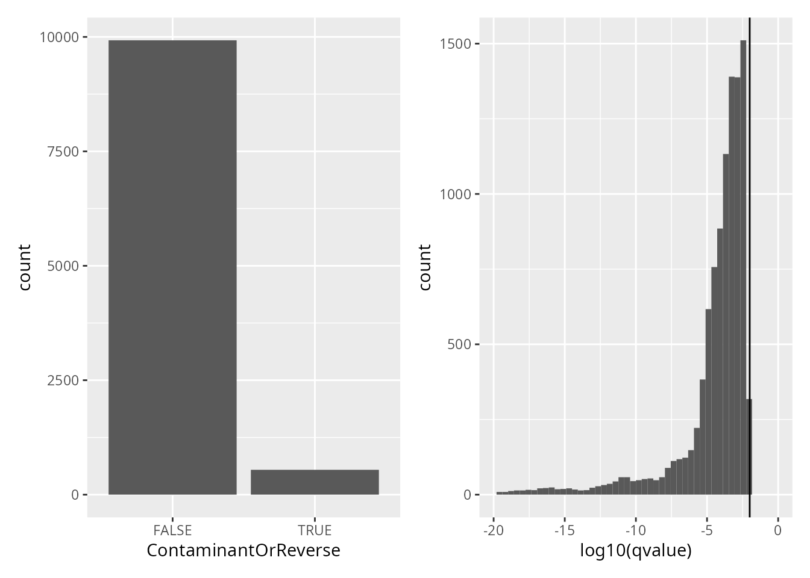
Peptide identification are already controlled for 1% FDR. We here remove contaminant and decoy peptides.
woo <- filterFeatures(
woo, ~ Reverse != "+" &
Potential.contaminant != "+")
## 'Reverse' found in 1 out of 1 assay(s)
## 'Potential.contaminant' found in 1 out of 1 assay(s)Similarly to the features, we also remove low-quality cells. The quality control criteria are:
woo <- countUniqueFeatures(
woo, i = names(woo), colDataName = "NumberPeptides"
)
woo <- medianCVperCell(
woo, i = "peptides_intensity", groupBy = "Leading.razor.protein",
nobs = 5, norm = "SCoPE2", colDataName = "MedianCV"
)We plot the metrics used to perform sample quality control.
ggplot(data.frame(colData(woo))) +
aes(
y = MedianIntensity,
x = NumberPeptides,
color = MedianCV,
shape = Treatment
) +
geom_point(size = 2) +
scale_color_continuous(type = "viridis")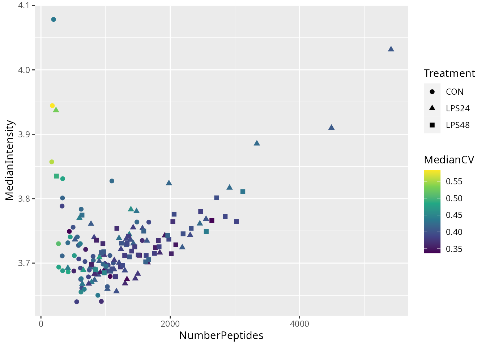
There are a few suspicious cells with low number of detected peptides and high median CV. We will remove cells with less than 400 peptides and with a median CV higher than 0.5. We will not use the median intensity as a QC metric. We apply the filter and keep only single cells that pass the quality control.
passQC <- !is.na(woo$MedianCV) & woo$MedianCV < 0.5 &
woo$NumberPeptides > 400
woo <- subsetByColData(woo, passQC)We log2-transform the quantification data.
woo <- logTransform(woo, i = "peptides_intensity", name = "peptides_log")Model the data using the linear regression model implemented in
scp. The model is applied on a
SingleCellExperiment so we extract it from the processed
data set along with the colData.
sce <- getWithColData(woo, "peptides_log")First, we must specify which variables to include in the model. We here include 3 variables:
MedianIntensity: this is the normalization factor used
to correct for cell-specific technical differences.Chip: the sample preparation chip is a potential source
of batch effect.Treatment: this is the biological variable of
interest.scpModelWorkflow() fits linear regression models to the
data, where the model is adapted for each peptide depending on its
pattern of missing values.
sce <- scpModelWorkflow(
sce,
formula = ~ 1 + ## intercept
## normalization
MedianIntensity +
## batch effects
Chip +
## biological variability
Treatment
)Once the model is prepared, we can explore the distribution of the n/p ratios.
scpModelFilterThreshold(sce) <- 2
scpModelFilterPlot(sce)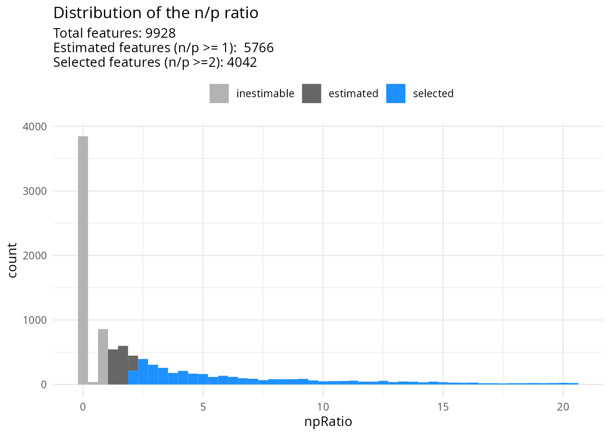
Many peptides do not have sufficient observations to estimate the model. We have chosen to continue the analysis with peptides that have \(n/p >= 2\). You could consider \(n/p\) a rough average of the number of replicates per parameter to fit (for categorical variables, the number of replicates per group). We recommend moving the threshold away from 1 to increase statistical power and remove noisy peptides. This comes of course at the cost of less peptides included in the analysis.
The model analysis consists of three steps:
The variance analysis explores the proportion of data captures by each variable in the model.
(vaRes <- scpVarianceAnalysis(sce))
## DataFrameList of length 4
## names(4): Residuals MedianIntensity Chip Treatment
vaRes[[1]]
## DataFrame with 4042 rows and 4 columns
## feature SS df percentExplainedVar
## <character> <numeric> <numeric> <numeric>
## 1 AAAAATAATK 0.877832 12 9.23296
## 2 AAAEVNQEYG... 2.143368 19 27.01360
## 3 AAAFEQLQK 32.771158 36 69.11668
## 4 AAAMANNLQK 3.751524 7 18.80773
## 5 AAANEQLTR 15.121272 70 42.58844
## ... ... ... ... ...
## 4038 YYPTEDVPR 1.96949 5 53.07102
## 4039 YYSIASSSK 2.59158 7 9.97151
## 4040 YYTLEEIQK 13.98114 55 43.16651
## 4041 YYTPTISR 5.94088 33 45.93421
## 4042 YYVTIIDAPG... 36.10122 39 56.63360The results are a list of tables, one table for each variable. Each
table reports for each peptide the variance captures (SS),
the residual degrees of freedom for estimating the variance
(df) and the percentage of total variance explained
(percentExplainedVar). To better explore the results, we
add the annotations available in the rowData.
vaRes <- scpAnnotateResults(
vaRes, rowData(sce), by = "feature", by2 = "Sequence"
)By default, we explore the variance for all peptides combined:
scpVariancePlot(vaRes)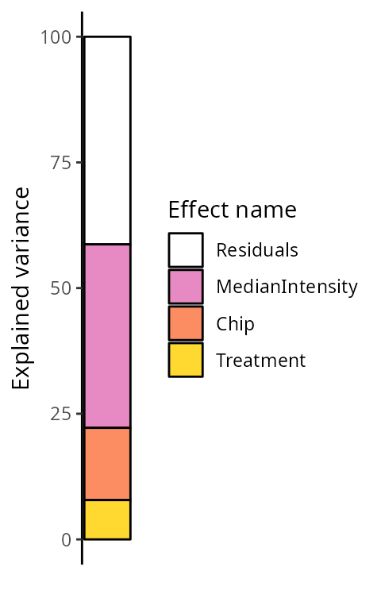
We explore the top 20 peptides that are have the highest percentage of variance explained by the biological variable (top) or by the batch variable (bottom).
scpVariancePlot(
vaRes, top = 20, by = "percentExplainedVar", effect = "Treatment",
decreasing = TRUE, combined = FALSE
) +
scpVariancePlot(
vaRes, top = 20, by = "percentExplainedVar", effect = "Chip",
decreasing = TRUE, combined = FALSE
) +
plot_layout(ncol = 1, guides = "collect")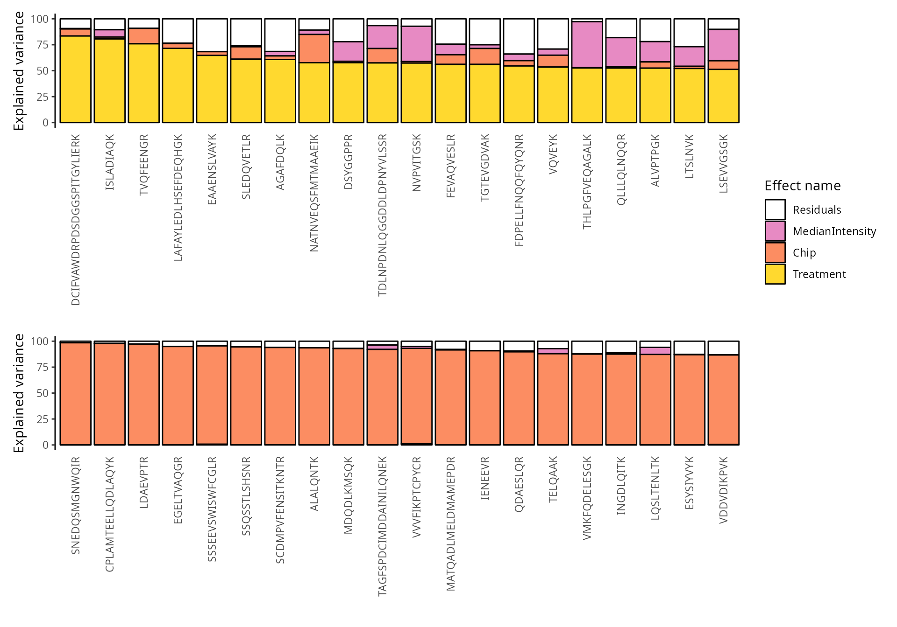
We can also group these peptide according to their protein. We simply
need to provide the fcol argument.
scpVariancePlot(
vaRes, top = 20, by = "percentExplainedVar", effect = "Treatment",
decreasing = TRUE, combined = FALSE, fcol = "Gene.names"
) +
scpVariancePlot(
vaRes, top = 20, by = "percentExplainedVar", effect = "Chip",
decreasing = TRUE, combined = FALSE, fcol = "Gene.names"
) +
plot_layout(ncol = 1, guides = "collect")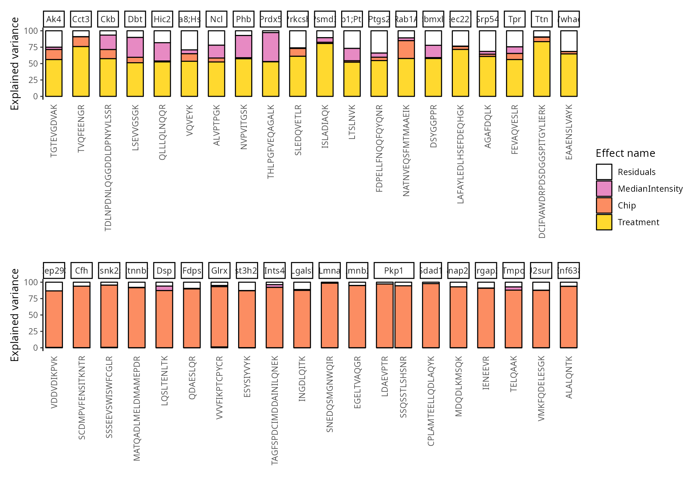
Next, we explore the model output to understand the differences
between treatment conditions. The difference of interest is specified
using the contrast argument. The first element points to
the variable to test and the two following element are the groups of
interest to compare. Since we have 3 groups, we explore the three
possible contrasts, provided as a list.
(daRes <- scpDifferentialAnalysis(
sce, contrast = list(c("Treatment", "CON", "LPS24"),
c("Treatment", "CON", "LPS48"),
c("Treatment", "LPS24", "LPS48"))
))
## List of length 3
## names(3): Treatment_CON_vs_LPS24 Treatment_CON_vs_LPS48 Treatment_LPS24_vs_LPS48Similarly to variance analysis, the results are a list of tables, one table for each contrast.
daRes[[1]]
## DataFrame with 4042 rows and 7 columns
## feature Estimate SE Df tstatistic pvalue
## <character> <numeric> <numeric> <numeric> <numeric> <numeric>
## 1 AAAAATAATK NA NA 12 NA NA
## 2 AAAEVNQEYG... -0.132380 0.0915688 19 -1.44569 0.1645585
## 3 AAAFEQLQK 0.425190 0.2284671 36 1.86106 0.0709183
## 4 AAAMANNLQK NA NA 7 NA NA
## 5 AAANEQLTR -0.145354 0.0747546 70 -1.94442 0.0558642
## ... ... ... ... ... ... ...
## 4038 YYPTEDVPR NA NA 5 NA NA
## 4039 YYSIASSSK 0.116941 0.4432525 7 0.263825 0.799513070
## 4040 YYTLEEIQK -0.374134 0.0916765 55 -4.081020 0.000146227
## 4041 YYTPTISR NA NA 33 NA NA
## 4042 YYVTIIDAPG... 0.787044 0.2081162 39 3.781753 0.000522754
## padj
## <numeric>
## 1 NA
## 2 0.256461
## 3 0.129164
## 4 NA
## 5 0.106305
## ... ...
## 4038 NA
## 4039 0.859425862
## 4040 0.000642391
## 4041 NA
## 4042 0.001944492Each table reports for each peptide the estimated difference between
the two groups, the standard error associated to the estimation, the
degrees of freedom, the t-statistics, the associated p-value and the
p-value FDR-adjusted for multiple testing across all peptides. Again, to
better explore the results, we add the annotations available in the
rowData.
daRes <- scpAnnotateResults(
daRes, rowData(sce),
by = "feature", by2 = "Sequence"
)We then visualize the results using a volcano plot. The function below return a volcano plot for each contrast. We here will show the results for the first contrast.
scpVolcanoPlot(daRes)[[1]]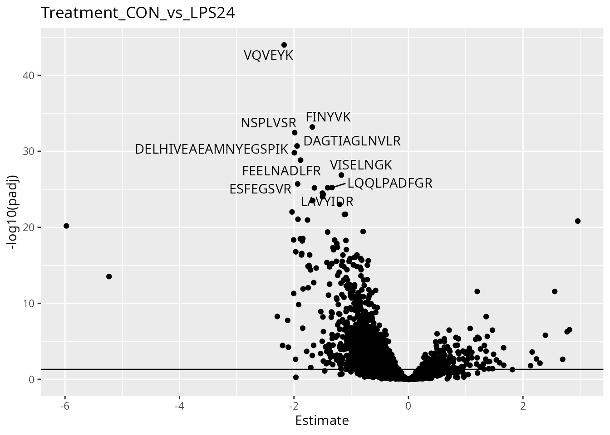
To help interpretation of the results, we will label the peptides with their protein name. Also we increase the number of labels shown on the plot. Finally, we can add colors to the plot. For instance, let’s explore the impact of the number of observations using the \(n/p\) ratio. We create a new annotation table, add it to the results and redraw the plot. The \(n/p\) ratio is retrieved using scpModelFilterNPRatio. We show the improved plots for all contrasts.
np <- scpModelFilterNPRatio(sce)
daRes <- scpAnnotateResults(
daRes, data.frame(feature = names(np), npRatio = np),
by = "feature"
)
scpVolcanoPlot(
daRes, top = 30, textBy = "Gene.names",
pointParams = list(aes(colour = npRatio))
) |>
wrap_plots(guides = "collect")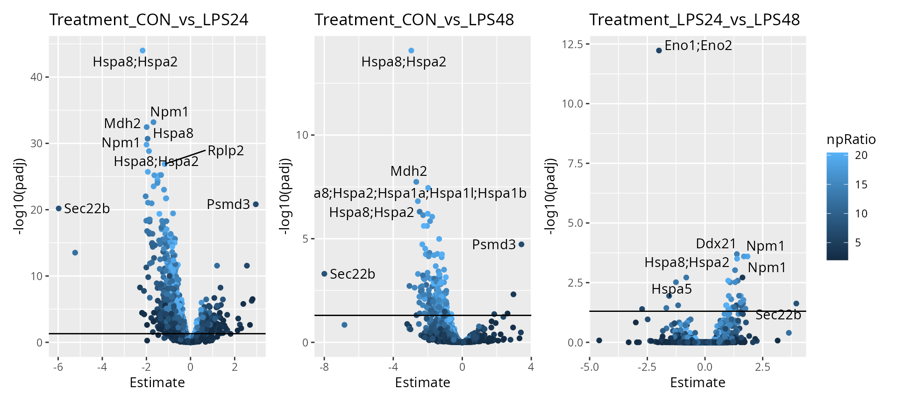
As expected, higher number of observations (higher \(n/p\)) lead to increased statistical power and hence to more significant results. We can already see that some proteins are upregulated upon treatment such as heat shock proteins, Npm1 and Mdh2.
Finally, we offer functionality to report results at the protein level.
scpDifferentialAggregate(daRes, fcol = "Gene.names") |>
scpVolcanoPlot(top = 30, textBy = "Gene.names") |>
wrap_plots()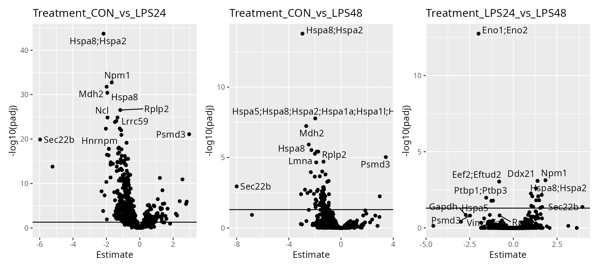
Finally, we perform component analysis to link the modelled effects to the cellular heterogeneity. We here run an APCA+ (extended ANOVA-simultaneous principal component analysis) for the treatment effect. In other words, we perform a PCA on the data that is capture by the treatment variable along with the residuals (unmodelled data).
(caRes <- scpComponentAnalysis(
sce, ncomp = 20, method = "APCA", effect = "Treatment",
maxiter = 200
))
## [1] "APCA"
## [1] "Treatment"
## List of length 2
## names(2): bySample byFeatureThe results are contained in a list with 2 elements.
bySample contains the PC scores, that is the component
results in sample space. byFeature contains the
eigenvectors, that is the component results in feature space.
caRes$bySample
## List of length 3
## names(3): unmodelled residuals APCA_TreatmentEach of the two elements contains components results for the data
before modelling (unmodelled), for the residuals or for the
APCA on the sample type variable (APCA_Treatment). Each
elements is a table with the computed components. Let’s explore the
component analysis results in cell space. Similarly to the previous
explorations, we annotate the results.
caResCells <- caRes$bySample
sce$cell <- colnames(sce)
caResCells <- scpAnnotateResults(caResCells, colData(sce), by = "cell")We then generate the component plot, colouring by
Treatment. To assess the impact of batch effects, we shape
the points according to the sample preparation batch (cf intro) as
well.
scpComponentPlot(
caResCells,
pointParams = list(aes(colour = Treatment, shape = Chip))
) |>
wrap_plots() +
plot_layout(guides = "collect")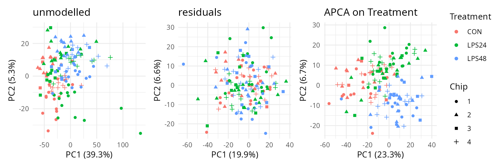
The data before modelling already shows some data pattern driven by the treatment as control samples are mostly characterized by low PC1 values, while treated cells show on average higher PC1 scores. However, the data also shows batch effects as cells from the same batch tend to group together. Batch effects are removed upon modelling and treatment conditions are better separated although they still overlap. There is not apparent structure in the residuals, indicating that the remaining variation may be attributed to noise.
We explore further the variance that is hidden in later components.
In the chunk above, we computed 20 principal components. To explore the
patterns they capture, we reduce these 20 PCs to 2 dimensions using
t-SNE. We rely on the scater package to compute the
t-SNE.
lapply(caResCells, function(ca) {
pcs <- ca[, grep("^PC", colnames(ca))]
tsne <- calculateTSNE(t(as.matrix(pcs)))
data.frame(cbind(ca, tsne)) |>
ggplot() +
aes(x = TSNE1,
y = TSNE2,
colour = Treatment,
shape = Chip) +
geom_point() +
theme_minimal()
}) |>
wrap_plots(guides = "collect")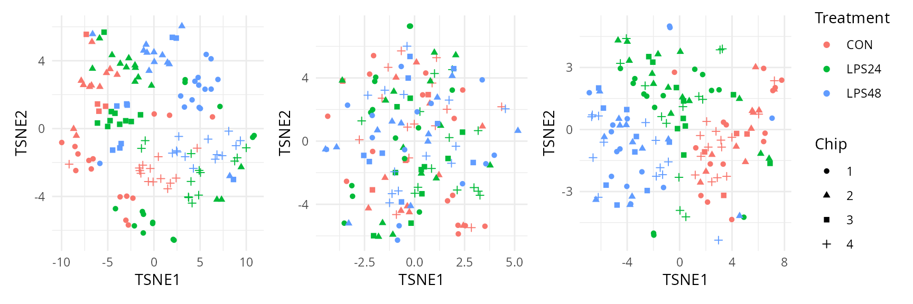
Taking the 20 principal components into account, we can see good separation between treatment after modelling while correctly mixing the batch effects. We can also clearly see a clear clustering of the sample preparation batches when data is not modelled. Again, the residuals show no interesting clustering.
You can manually explore the data through an interactive interface thanks to using the iSEE:
R Under development (unstable) (2023-07-27 r84768)
Platform: x86_64-pc-linux-gnu
Running under: Ubuntu 23.04
Matrix products: default
BLAS: /usr/lib/x86_64-linux-gnu/blas/libblas.so.3.11.0
LAPACK: /usr/lib/x86_64-linux-gnu/lapack/liblapack.so.3.11.0
locale:
[1] LC_CTYPE=en_US.UTF-8 LC_NUMERIC=C
[3] LC_TIME=en_US.UTF-8 LC_COLLATE=en_US.UTF-8
[5] LC_MONETARY=en_US.UTF-8 LC_MESSAGES=en_US.UTF-8
[7] LC_PAPER=en_US.UTF-8 LC_NAME=C
[9] LC_ADDRESS=C LC_TELEPHONE=C
[11] LC_MEASUREMENT=en_US.UTF-8 LC_IDENTIFICATION=C
time zone: Europe/Prague
tzcode source: system (glibc)
attached base packages:
[1] stats4 stats graphics grDevices utils datasets methods
[8] base
other attached packages:
[1] scater_1.31.0 scuttle_1.13.0
[3] SingleCellExperiment_1.25.0 dplyr_1.1.3
[5] patchwork_1.1.3 ggplot2_3.4.4
[7] scpdata_1.9.2 ExperimentHub_2.11.0
[9] AnnotationHub_3.11.0 BiocFileCache_2.11.1
[11] dbplyr_2.4.0 scp_1.11.3
[13] QFeatures_1.13.0 MultiAssayExperiment_1.29.0
[15] SummarizedExperiment_1.33.0 Biobase_2.63.0
[17] GenomicRanges_1.55.1 GenomeInfoDb_1.39.0
[19] IRanges_2.37.0 S4Vectors_0.41.1
[21] BiocGenerics_0.49.1 MatrixGenerics_1.15.0
[23] matrixStats_1.1.0 BiocStyle_2.31.0
loaded via a namespace (and not attached):
[1] RColorBrewer_1.1-3 jsonlite_1.8.7
[3] magrittr_2.0.3 ggbeeswarm_0.7.2
[5] farver_2.1.1 rmarkdown_2.25
[7] fs_1.6.3 zlibbioc_1.49.0
[9] ragg_1.2.6 vctrs_0.6.4
[11] memoise_2.0.1 DelayedMatrixStats_1.25.0
[13] RCurl_1.98-1.13 BiocBaseUtils_1.5.0
[15] htmltools_0.5.7 S4Arrays_1.3.0
[17] curl_5.1.0 BiocNeighbors_1.21.0
[19] SparseArray_1.3.0 sass_0.4.7
[21] bslib_0.5.1 desc_1.4.2
[23] cachem_1.0.8 igraph_1.5.1
[25] mime_0.12 lifecycle_1.0.4
[27] pkgconfig_2.0.3 rsvd_1.0.5
[29] Matrix_1.6-1.1 R6_2.5.1
[31] fastmap_1.1.1 GenomeInfoDbData_1.2.11
[33] shiny_1.7.5.1 clue_0.3-65
[35] digest_0.6.33 fdrtool_1.2.17
[37] colorspace_2.1-0 AnnotationDbi_1.65.2
[39] rprojroot_2.0.4 irlba_2.3.5.1
[41] textshaping_0.3.7 lpsymphony_1.31.0
[43] RSQLite_2.3.3 beachmat_2.19.0
[45] labeling_0.4.3 filelock_1.0.2
[47] fansi_1.0.5 httr_1.4.7
[49] abind_1.4-5 compiler_4.4.0
[51] bit64_4.0.5 withr_2.5.2
[53] BiocParallel_1.37.0 viridis_0.6.4
[55] DBI_1.1.3 highr_0.10
[57] MASS_7.3-60.1 rappdirs_0.3.3
[59] DelayedArray_0.29.0 tools_4.4.0
[61] vipor_0.4.5 beeswarm_0.4.0
[63] interactiveDisplayBase_1.41.0 httpuv_1.6.12
[65] glue_1.6.2 promises_1.2.1
[67] grid_4.4.0 Rtsne_0.16
[69] cluster_2.1.4 generics_0.1.3
[71] gtable_0.3.4 tidyr_1.3.0
[73] ScaledMatrix_1.11.0 BiocSingular_1.19.0
[75] metapod_1.11.0 utf8_1.2.4
[77] XVector_0.43.0 ggrepel_0.9.4
[79] BiocVersion_3.19.1 pillar_1.9.0
[81] stringr_1.5.0 later_1.3.1
[83] lattice_0.22-5 bit_4.0.5
[85] tidyselect_1.2.0 Biostrings_2.71.1
[87] knitr_1.45 gridExtra_2.3
[89] bookdown_0.36 ProtGenerics_1.35.0
[91] IHW_1.31.0 xfun_0.41
[93] stringi_1.7.12 lazyeval_0.2.2
[95] yaml_2.3.7 evaluate_0.23
[97] codetools_0.2-19 nipals_0.8
[99] MsCoreUtils_1.15.1 tibble_3.2.1
[101] BiocManager_1.30.22 cli_3.6.1
[103] xtable_1.8-4 systemfonts_1.0.5
[105] munsell_0.5.0 jquerylib_0.1.4
[107] Rcpp_1.0.11 png_0.1-8
[109] parallel_4.4.0 ellipsis_0.3.2
[111] pkgdown_2.0.7 blob_1.2.4
[113] AnnotationFilter_1.27.0 sparseMatrixStats_1.15.0
[115] bitops_1.0-7 viridisLite_0.4.2
[117] slam_0.1-50 scales_1.2.1
[119] purrr_1.0.2 crayon_1.5.2
[121] rlang_1.1.2 KEGGREST_1.43.0 citation("scp")
To cite the scp package in publications use:
Vanderaa, Christophe, and Laurent Gatto. 2023. Revisiting the Thorny
Issue of Missing Values in Single-Cell Proteomics. Journal of
Proteome Research 22 (9): 2775–84.
Vanderaa Christophe and Laurent Gatto. The current state of
single-cell proteomics data analysis. Current Protocols 3 (1): e658.;
doi: https://doi.org/10.1002/cpz1.658 (2023).
Vanderaa Christophe and Laurent Gatto. Replication of Single-Cell
Proteomics Data Reveals Important Computational Challenges. Expert
Review of Proteomics, 1–9 (2021).
To see these entries in BibTeX format, use 'print(<citation>,
bibtex=TRUE)', 'toBibtex(.)', or set
'options(citation.bibtex.max=999)'.This vignette is distributed under a CC BY-SA license license.